The purpose of {pw} is to streamline the use of Playwright for testing your golem applications.
Workflow

Requirements
- Ensure that npm (with npx) is installed on your computer.
- You must be working within a golem project.
- The default test structure should be present (if not, run
usethis::use_testthat()to set it up).
Initializing Playwright Testing
To set up Playwright testing in your golem project, execute the following command:
pw::pw_init()This function will:
- Run
npx create-playwright@latestin thetests/playwrightfolder. - Add the following files to your project:
-
tests/playwright/playwright.config.ts(updated) -
tests/playwright/tests/default.test.ts(created) -
tests/testthat/test-playwright.R(created)
-
After setup, run devtools::test() to confirm that everything is functioning correctly